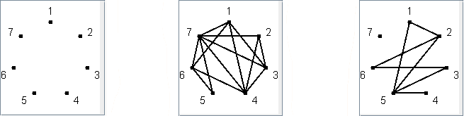
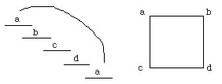
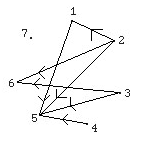
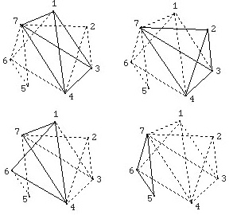
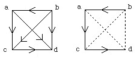
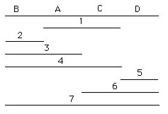

Roberts' (1976) graph theory solution of the "Benzer's problem" avoids these potential sources of
error. Let us begin by representing each mutant by a vertex in a graph (Figure 5a). Then we can
process all the data in Table I row by row in a continuous series of steps, without any erasures or
backtracking, by simply connecting any two vertices representing overlapping deletions with an
edge; i.e., we construct the intersection graph equivalent to Table I (Figure 5b). Second, we
construct the complement of the intersection graph by placing edges between all the vertices not
connected in the intersection graph (Figure 5c).

Figure 5:
Now we are at a point in a solution where we can check to see if the original intersection graph is,
in fact, consistent with the expectations of a linear genetic map. First, the intersection graph should
contain no Ws (Figure 6) which are four vertices connected together into open squares with no
diagonals.

Figure 6: The successive overlapping of the four fragments on the left are
represented by the intersection graph, a Z4, on the right. Such
representations imply a circular structure.
On checking Figure 5 (b), we see that it does not contain any Z4's and, therefore, Figure 5 (b) is a legitimate graph of an overlapping deletion experiment according to this criterion.
Secondly, the complement of the intersection graph (Figure 5c) should be capable of being made
transitive. Most readers are familiar with the transitive relationship: if a<b and b<c, then a<c. In
graphs, a closed loop is transitive if a -->b and b-->c, then a must -->c also (Figure 7).

Figure 7: Transitive orientation of the complementary graph illustrated in
Figure 5c.
Since both criteria are shown to hold for the data in this example, we are thus assured it is worth
proceeding to solve the problem. The next step is to find all the maximal cliques (synonyms: complete
subgraphs, universal graphs, cliques) of the original intersection graph (Figure 5b). Cliques originally
referred to exactly what the reader might first construe them to mean* namely, a group of n persons
who a11 speak to one another (Festinger, 1949). Thus, a maximal clique is the largest subgraph in
a graph in which all the vertices are connected by edges. There are four maximal cliques in Figure
5b (see Figure 8).

Figure 8: The four maximal cliques contained in Figure 5b. Each maximal
clique is outlined in solid lines.
Thus, in this example there are four maximal cliques and each vertex was contained in at least one
maximal clique. Next we order these maximal cliques in the same order as the direction between
noncommon vertices of two maximal cliques in the transitive complement of the intersection graph
(refer back to Figure 7). Thus, for example, Vertices 1 and 2 are not common to maximal cliques
A and B and are connected 2-->l in Figure 7; therefore, we say the order of the maximal cliques is
B-->A. By applying similar reasoning to all the maximal cliques, Figure 9 (a) can be obtained.

Figure 9:
The penultimate step in the solution is to find the Hamiltonian path connecting all the maximal cliques. A Hamiltonian path is a path connecting all of the vertices, but traverses through any one vertex only once. In Figure 9 (a), it is very easy to see that B has all outgoing edges and thus must be a beginning point of the Hamiltonian path. Also, since D has all incoming edges, it must be the end of the Hamiltonian path. Therefore, the Hamiltonian path shown in Figure 9 (b) emerges easily.
Finally, we now are able to construct the interval graph equivalent to that shown earlier in Figure 4.
We simply construct a line with the maximal cliques ordered in the same relative sequence as their
Hamiltonian path and then each deletion will overlap those maximal cliques of which it is a vertex.
Thus, Figure 10, produced in this way, is topologically equivalent to the topographic map of the
deletions, seen in Figure 4, produced by the traditional solution method.

Figure 10: Interval graph of the deletions (1 through 7) overlapping the
four maximal cliques (A through D) ordered on a Hamiltonian path.
Inspection shows that the only difference between Figures 4 and 10 is the left-right orientation which was arbitrary anyway and the ambiguity of the lengths of lines in Figure 4. Figure 10 has four intervals of deleted regions of the chromosome and is a parsimonious solution. Although the graph theory solution to "Benzer's problem" seems longer than the classical solution, it has the three distinct advantages of (1) depending on a formal series of logical steps which can be axiomatized, of (2) being adaptable to automatic processing on a computer, and of (3) producing a parsimonious solution. To reiterate the steps involved in the graph theory solution of "Benzer's problem", for easy reference, the steps are laid out in Table II.
Table II. Steps in the graph theory solution of "Benzer's problem"
Thus, the algorithm is capable of processing the original recombination matrix data through each of these nine steps.